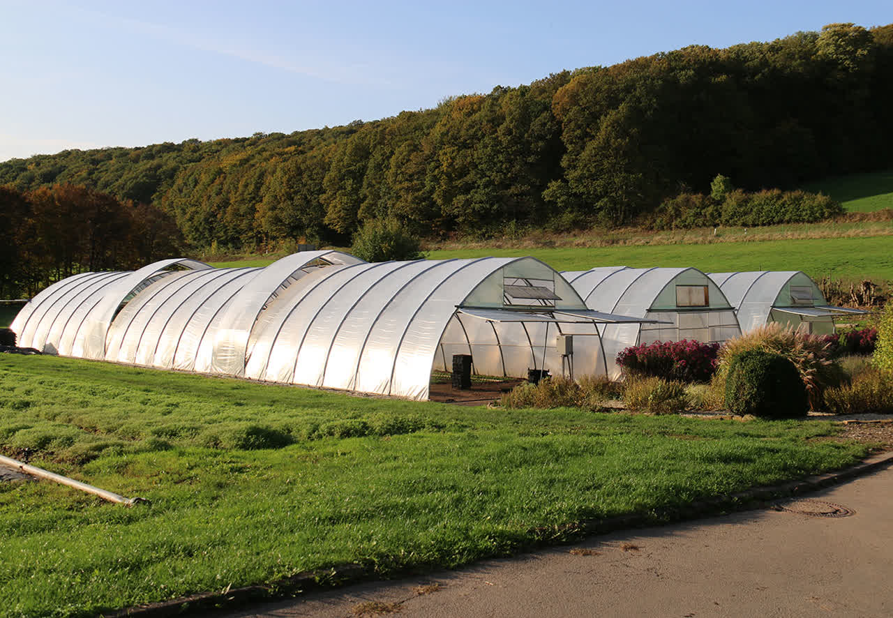
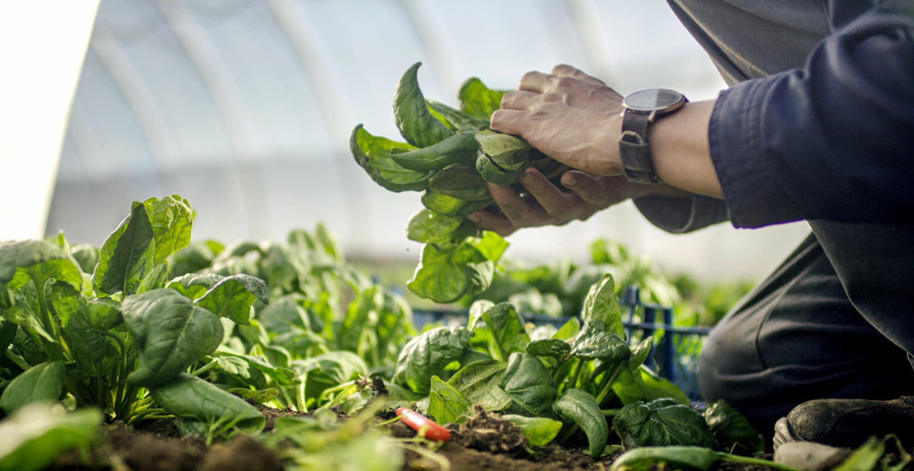
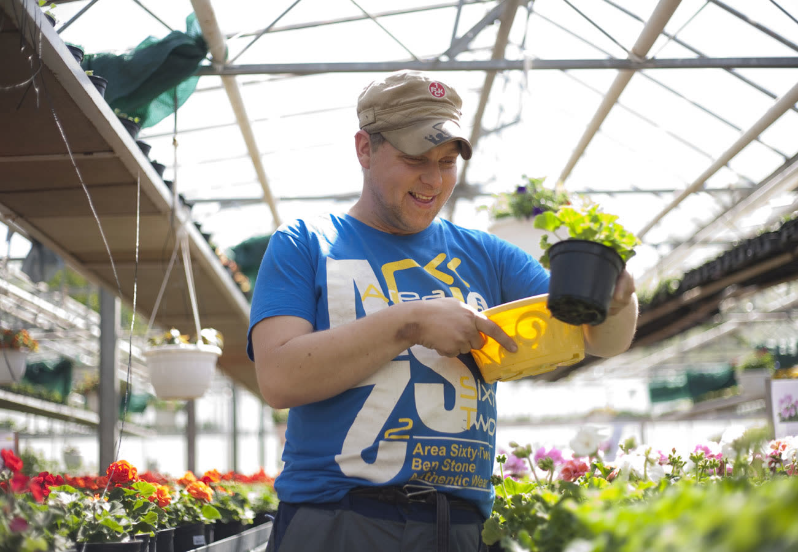
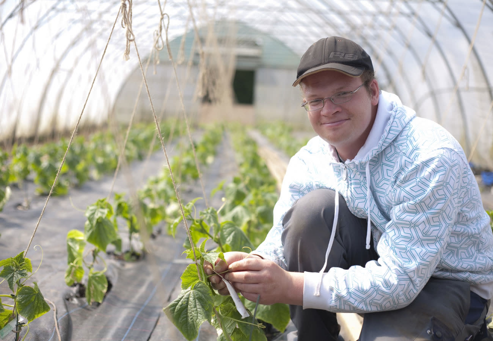
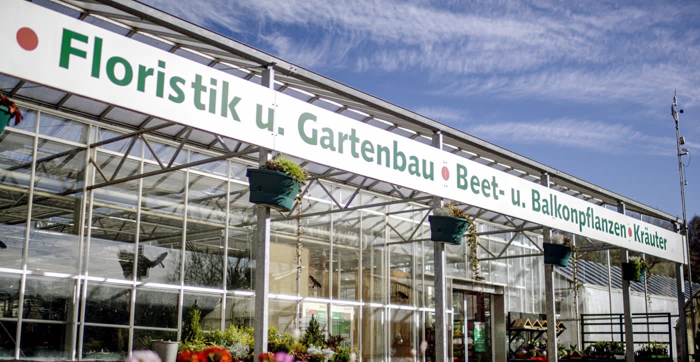

Blumen und Zierpflanzen
Salat- und Gemüsejungpflanzen, eigene Erde, Floristik und die Bepflanzung von Balkonkästen. Kübelpflanzen überwintern wir gern für Sie.
Pflanzen für Beet, Balkon und Garten: Gemüse, Obst, Kräuter, Blumen und Zierpflanzen. Hier blüht Ihnen was, je nach Saison.

Je nach Saison erwartet Sie ein reichhaltiges Angebot an Pflanzenarten und -sorten. Knackfrisches Gemüse und Salate aus dem eigenen Anbau sind täglich auch im Hofladen erhältlich.


Salat- und Gemüsejungpflanzen, eigene Erde, Floristik und die Bepflanzung von Balkonkästen. Kübelpflanzen überwintern wir gern für Sie.

Rund 8.000 m² Freiland und 720 m² Gewächshäuser, biologischer Pflanzenschutz, Jäten von Hand und kein Einsatz von Herbiziden.

Von April bis Oktober: ein- und mehrjährige Kräuter als Bundware, Topfkräuter für Tee, Küche und Grill, mit Wissen zu Sorten und Verwendung.

Ein Hektar mit Süßkirschen, Zwetschgen, Mirabellen, Pflaumen, Quitten und Birnen, ökologisch bewirtschaftet. Frischobst, Sießschmeer und Liköre gibt es im Hofladen.
März bis Oktober
November
Dezember bis Februar
Montag ist Ruhetag.
Verkaufsoffener Sonntag: 22. März 2026, 12-17 Uhr
Ob Beetplanung, Balkonkasten oder Bodentest: Das Gärtnerei-Team hilft Ihnen weiter. Im April gibt es wieder die Bodentest-Aktion mit Gartenberatung.